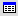
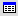

Köite valideerimine
Et kontrollida, kas kogu sõnastiku köide vastab XML skeemile, ava sõnastik (või mõni sõnaartikkel) ja vali Sõnastiku tööriistad -- Köite valideerimine. Ilmuvas tulemuste tabelis kuvatakse kirjed, mis ei valideeru, ja veateade. Märksõnale klõpsates saab artiklisse siseneda, et viga parandada. Tagasi otsingutulemuste tabelisse minemiseks ära kasuta brauseri Back-nuppu, vaid nuppu(Otsingutulemuste tabel ülal vasakul).
-- Köite valideerimine. Ilmuvas tulemuste tabelis kuvatakse kirjed, mis ei valideeru, ja veateade. Märksõnale klõpsates saab artiklisse siseneda, et viga parandada. Tagasi otsingutulemuste tabelisse minemiseks ära kasuta brauseri Back-nuppu, vaid nuppu(Otsingutulemuste tabel ülal vasakul).Kui köide valideerus, on kuvatav otsingutulemuste tabel tühi.